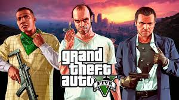
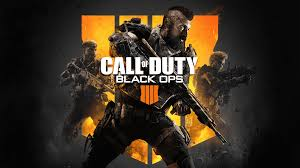

-
Grand theft alto V
-
O famoso gta V lançado em 17 de setempro de 2013
Impacto Financeiro Histórico
- Faturamento Relâmpago: Arrecadou 800 milhões de dólares nas primeiras 24 horas.
- Marca Bilionária: Alcançou 1 bilhão de dólares em apenas três dias, superando qualquer filme de Hollywood.
- Produto Mais Lucrativo: Com mais de 200 milhões de cópias vendidas, tornou-se o produto de entretenimento individual mais lucrativo de todos os tempos.
- o gta online em 2020 foi uma evolução no mundo dos games pois na pandemia que veio com mais de 600 milhoes de players diarios
O jogo quebrou recordes mundiais logo nos primeiros dias.

-
O famoso gta V lançado em 17 de setempro de 2013
-
Call of duty:black ops
- O black ops começou em 9 novembro de 2010
- Call of Duty: Black Ops (2010) é amplamente considerado uma das maiores obras-primas da franquia devido ao seu enredo focado em lavagem cerebral, paranoia da Guerra Fria e uma das reviravoltas mais chocantes da história dos videogames.
- Call of Duty: Black Ops II (2012) é frequentemente considerado o ápice da franquia por sua narrativa ambiciosa, sendo o primeiro jogo da série a introduzir múltiplos finais e escolhas morais que alteram o destino dos personagensCall of Duty: Black Ops II (2012) é frequentemente considerado o ápice da franquia por sua narrativa ambiciosa, sendo o primeiro jogo da série a introduzir múltiplos finais e escolhas morais que alteram o destino dos personagens
- Call of Duty: Black Ops 6 leva a franquia para o início dos anos 1990, um período marcado pelo fim da Guerra Fria, a queda do Muro de Berlim e a Guerra do Golfo. O jogo funciona como uma sequência direta dos flashbacks de Black Ops 2 (1989) e de Black Ops Cold War.
A franquia Call of Duty: Black Ops

-
Minecraft
- Lançamento Oficial (Java 1.0): 18 de novembro de 2011
O sucesso do Minecraft
- O minecraft foi uma das principais fontes de entreterimento do youtube por mais de uma decada, com 12 bilhões de dolares.
- Des de o lançamento o jogo mantém mais de 140 milhões de usuários ativos mensais espalhados por 150 países
- O jogo é de sobrevivencia que você tem que ir até o The End derrotar o dragão
- O Minecraft possui atualmente 65 biomas gerados naturalmente em sua versão oficial e estável
.jpg)